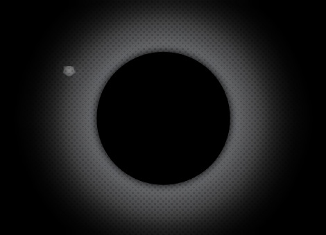
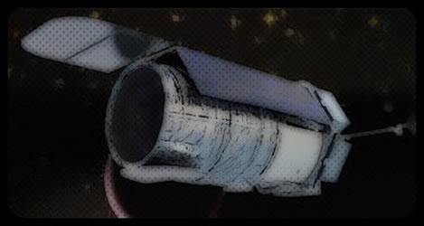
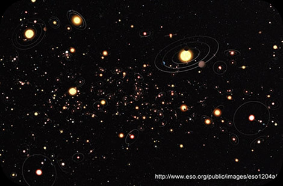
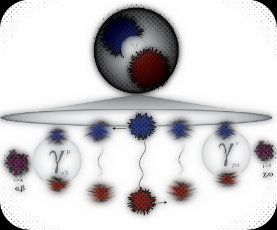
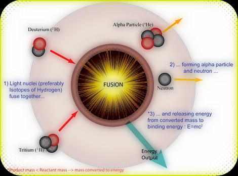

WISE Debris Disks

Debris disks are circumstellar disks of dust that act as signposts for planetary systems. The thermal glow from the dust can be measured by the Wide-Frield Infared Survey Explorer space telescope and we use this data to find previously undiscovered planetary systems.
-
Direct imaging of
planetary systems

One way to find planets is to actually just take a picture of one. But it's like trying to find a fly around a large flood lamp, 10 miles away, and sometimes through a glass of water. Welcome to High-Contrast imaging! Check out some of the projects I'm working on to help directly image planets [under construction].
-
WFIRST @ IPAC

The Wide-Field Infrared Survey Telescope (WFIRST) is a future space telescope (launch ~2020's). WFIRST will be surveying large portions of the sky, but will also have coronagraphic capabilities to image planets in reflected light. IPAC (along with GSFC and STScI) will be one of the science centers for WFIRST. Check out some of the tasks I and others at IPAC are doing to help the community get WFIRST ready!
Exoplanet Yields

We don't just randomly pick stars out of the sky to look for planets. To help our observations, we try to simulate the type of planets we can detect around stars based on sophisticated models. Check out some of the work I've done in the past to figure out exoplanet yields with the Palomar PALM-3000 adaptive optics system and the vector vortex coronagraph.[under construction]
Study in QCD

Quantum Chromodynamics (QCD) explains the behavior of quarks and gluons. The gluons act like the communication line between the quarks, but they also contribute to the particle's total mass. So what would happen if the mass of the quarks were taken to zero? This is one of the questions we tried to answer. Check it out to learn more [under construction].
-
Dust In A Tokamak

Everyday, we are closer and closer to sustained fusion energy. In current and future fusion reactors (TOKAMAK), dust in the reactor zaps energy away from the reaction, and the fusion shot only lasts for a couple of seconds. During my undergrad years, I shortly helped study how to track the dust in these reactors. Check out some of the work done [under construction].
 orcid.org/0000-0002-5025-6827
orcid.org/0000-0002-5025-6827